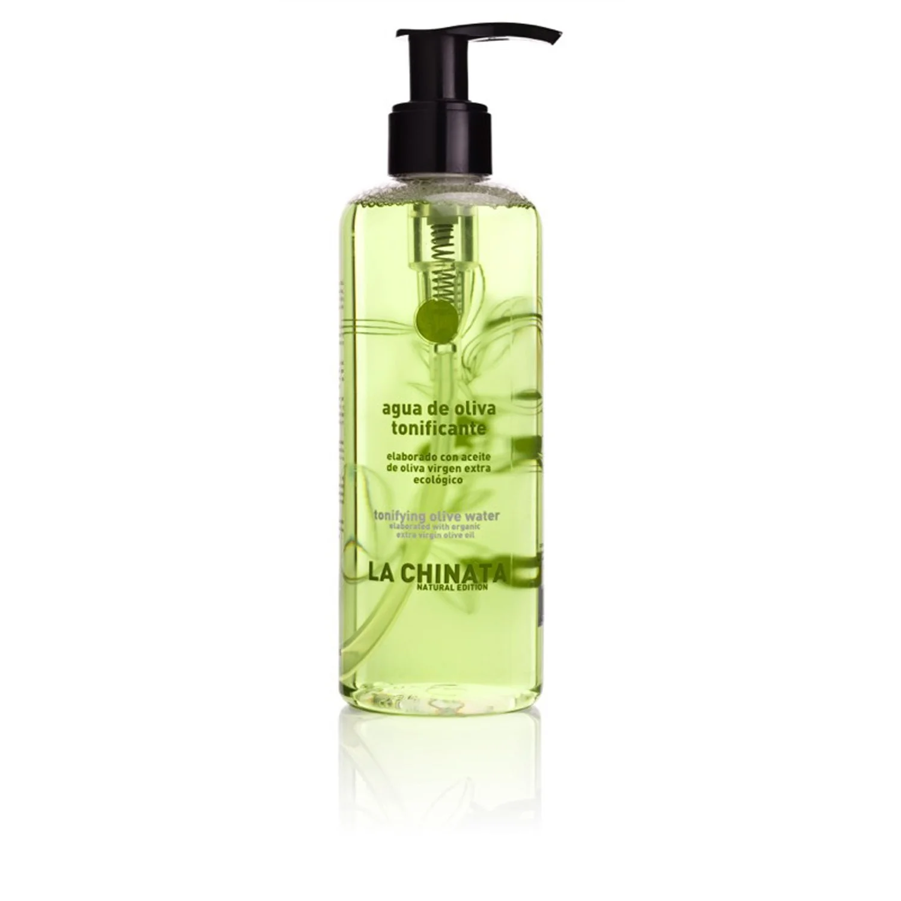

Cosmetic Made in Spain
首頁
聯繫我們
產品展示

Agua tónica
250ml
La chinata nutre el agua de oliva con el objetivo de limpiar, refrescar y liberar todo tipo de toxinas en la piel. Los suplementos faciales son la base del cuidado cosmético convencional, ya que es un astringente utilizado en procesos de limpieza y descamación de la piel, que elimina el exceso de grasa y bacterias, especialmente en lugares inaccesibles a la leche de lavado facial. Sin embargo, es importante elegir el adecuado para mantener el equilibrio de pH de la piel sin dejar la piel seca o inflamada. Con agua de oliva nutritiva, gracias a que su fórmula se basa en la tensión derivada del agua termal, el extracto de aceituna y el aceite de oliva virgen extra, podemos limpiar la piel de manera suave y mejorar la hidratación facial a través de sus ingredientes activos. Se recomienda usarlo con almohadillas de algodón.